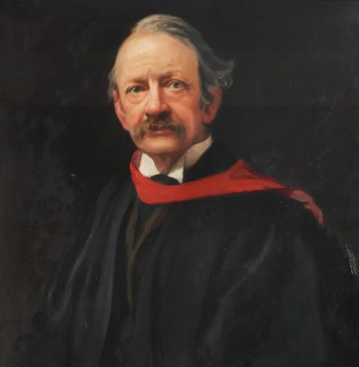
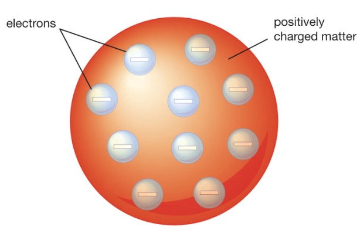

Discovery of the Electron
1. Johnstone G. Stoney
Johnstone G. Stoney suggested that electricity is made of tiny fundamental units and named them "electrons." However, he only predicted them in theory and did not prove their existence through experiments.
2. William Crookes
William Crookes invented the cathode ray tube. He passed electricity between two electrodes under low pressure and high voltage.
Cathode rays are invisible to the eye, but they can be detected using a fluorescent material that glows green when hit by the rays.
3. J. J. Thomson


J. J. Thomson carried out many experiments with cathode ray tubes. By studying how cathode rays behave, he proved they are made of particles and discovered the electron.
Characteristics of Cathode Rays
| Characteristic | Experiment Demo |
|---|---|
| Travel in straight lines | — |
| Have mass and kinetic energy (PADDLEWHEEL Experiment - they can turn a light paddle wheel placed in their path) |
|
| Bends towards the positive plate in an electric field |
|
| Deflects perpendicular in a magnetic field |
|
| Their properties do not change with different gases inside the tube | — |
| Their charge-to-mass (e/m) ratio is always constant | — |